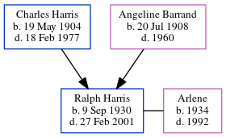

Ralph Eugene Harris 1930 - 2001
[ Home ] | [ Calendar ] | [ Surnames Index ] | [ Census Index ] | [ Family History ]The child of Charles Harris and Angeline Barrand, Ralph Harris, the fifth cousin once-removed on the mother's side of Nigel Horne, was born in Fort Wayne, Allen, Indiana, USA on Sep 9, 19301,2,3,4. He was married to Arlene. On Apr 1, 1940, he was living at his birthplace3. He served in the army in Korea (army).
He died on Feb 27, 2001 in Liberty Mills, Wabash, Indiana, USA1,2,4 and was buried on Covington Memorial Gardens, 8408 Covington Road, Fort Wayne, Allen, Indiana after Feb 27, 20015.
Parents
- Charles F was born on May 19, 1904
- Angeline Marie was born on Jul 20, 1908
Citations
- Social Security Death Index - Findmypast
- U.S. Veteran's Gravesites - Findmypast
- US Census 1940 - Findmypast (was age 9 and the son of the head of the household)
- United States Obituary Notices - Findmypast
- https://billiongraves.com/grave/Ralph-E-Harris/36564989?referrer=myheritage
Media
Social Security Death Index - USBMD/SSDI/310320168
U.S. Veteran's Gravesites - USM/VETGRV/2155216
United States Obituary Notices - US/TRIB/035501952
Family Tree
Generated by ged2site. Last updated on Jun 11, 2024